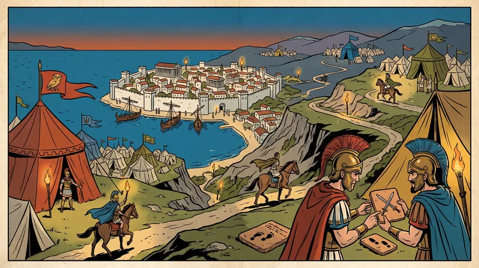
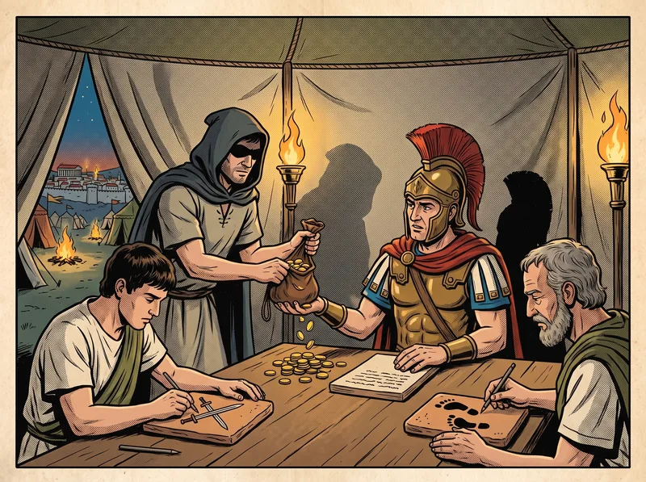
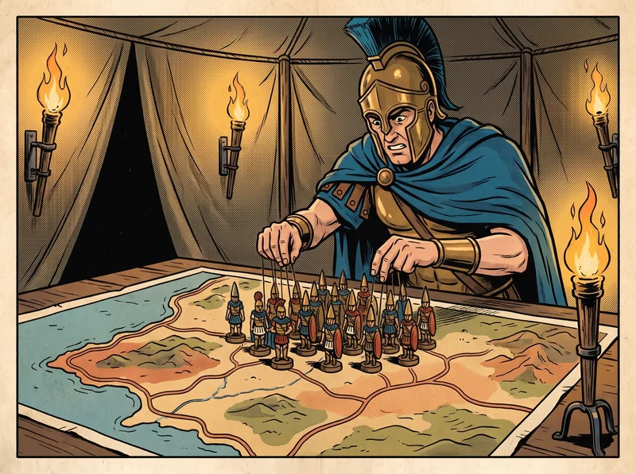
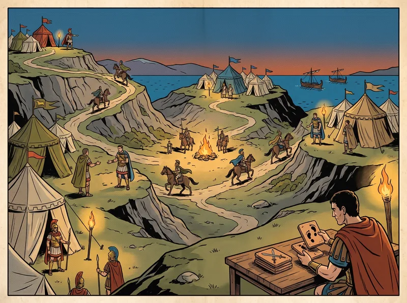
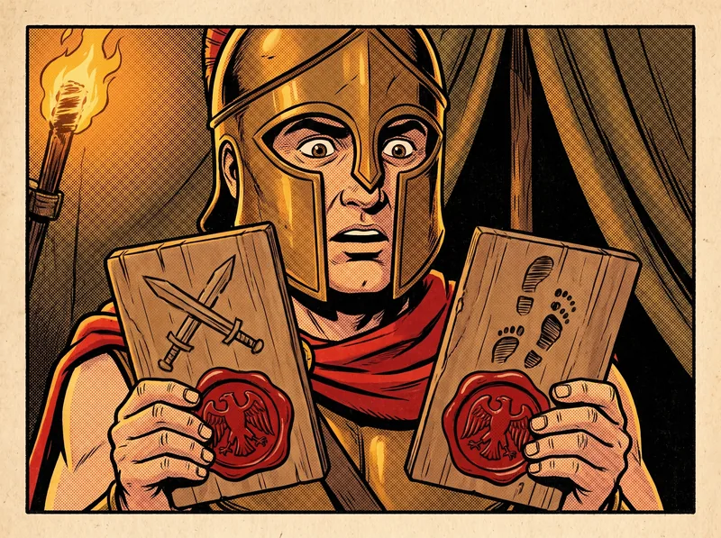
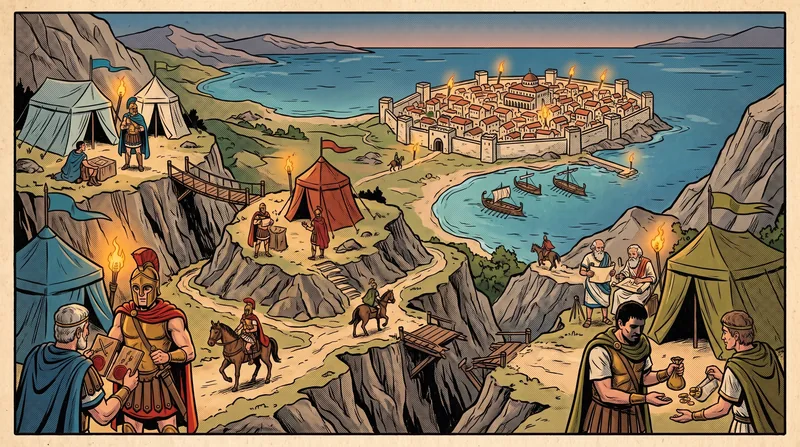
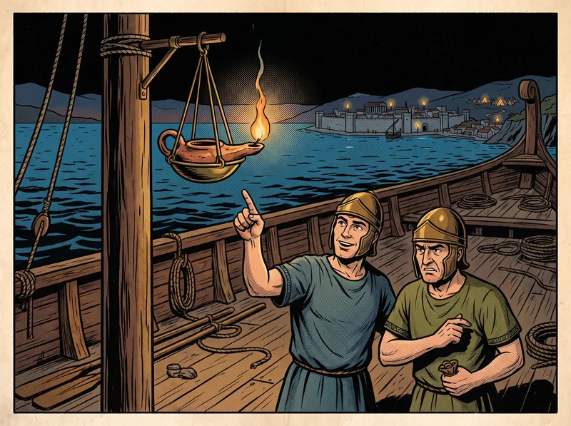

The Generals Before the Walls
Pease, Shostak & Lamport, 1980; Lamport, Shostak & Pease, "The Byzantine Generals Problem," 1982
After M. Pease, R. Shostak & L. Lamport, “Reaching Agreement in the Presence of Faults,” JACM 27, 2 (1980), and L. Lamport, R. Shostak & M. Pease, “The Byzantine Generals Problem,” ACM TOPLAS 4, 3 (July 1982), 382–401. Retold as a chronicle of the siege, with the mathematics intact.
This volume joins two documents. The first is a short, severe treatise of seven columns on what the geometers called interactive consistency, drawn up for the builders of a warship steered by many helmsmen. The second, written two years later by the same three geometers, restates the same results as a story about generals besieging a city. The story was far more widely copied than the treatise, which confirms a pattern the reader of this series will come to recognize.
The geometers were Πῆς, Σοστάκ and Leslie, the wandering scholar of Volume I, who had evidently stopped wandering long enough to join a commission. Their generals were said to belong to the army of Byzantion — a Greek city, founded by colonists from Megara, which makes the story more at home in this series than its readers might expect.
The central result of the volume is a bound. Every fortified council of the later volumes is built upon it.
— The Translator
The Siege of Byzantion

1.1 · Two Conditions
After observing the city, the generals had to decide upon a common plan — to attack or to retreat. Attack by only some divisions would be a massacre. But some of the generals might be traitors, trying to prevent the loyal generals from reaching agreement. The geometers required a method guaranteeing that
- All loyal generals decide upon the same plan of action.
- A small number of traitors cannot cause the loyal generals to adopt a bad plan.
The loyal generals do what the method says. The traitors may do anything they wish, and the method must guarantee condition A regardless. Condition B is hard to state precisely, since that requires saying what a bad plan is, and the geometers did not try. Instead they considered how the plan is reached. Each general observes the city and sends his observation v(i) to the others. Each general then combines v(1), …, v(n) into a plan by some fixed, robust method — for a choice between attack and retreat, a simple majority vote. A few traitors can then sway the decision only if the loyal generals were already nearly evenly divided, in which case neither plan could be called bad.
The obvious way to share the values is for each general to send his v(i) by messenger to every other. This fails, because a traitor may send different values to different generals. What is needed is that
- 1′. Any two loyal generals use the same value of v(i) — whether or not general i is loyal.
- 2. If general i is loyal, then the value he sends is used by every loyal general as v(i).
1.2 · The Commander and His Lieutenants
Both conditions concern the single value sent by one general. So the geometers reduced the whole matter to the problem of one commanding general sending an order to his n − 1 lieutenants:
A commanding general must send an order to his n − 1 lieutenant generals such that
IC1. All loyal lieutenants obey the same order.
IC2. If the commanding general is loyal, then every loyal lieutenant obeys the order he sends.
These are the interactive consistency conditions. If the commander is loyal, IC1 follows from IC2 — but the commander need not be loyal. To solve the original problem, each general i in turn acts as commander and sends the order “use v(i) as my value”, with the others as lieutenants.1

The Impossibility of Three
2.1 · Three Generals, One Traitor
The problem seems deceptively simple. Its difficulty is shown by a surprising fact: if the generals can send only spoken messages, no method works unless more than two-thirds of them are loyal. In particular, three generals cannot cope with a single traitor. A spoken message is one whose contents are entirely under the control of the messenger’s master, so a traitorous sender can transmit anything at all.
Consider first a loyal commander who sends “attack”, while Lieutenant 2 is a traitor and reports to Lieutenant 1 that he received “retreat”. For IC2, Lieutenant 1 must attack. Now consider a traitorous commander who sends “attack” to Lieutenant 1 and “retreat” to Lieutenant 2, while Lieutenant 2, loyal, truthfully reports to Lieutenant 1 that he received “retreat”.
![A split comic panel with a vertical divider. Left half: a loyal commander on a white horse gives a crossed-swords tablet to Lieutenant 1 and the same to Lieutenant 2, but Lieutenant 2 (shifty, shadowed face) whispers a retreating-footprints tablet to Lieutenant 1. Right half: a shifty commander hands a crossed-swords tablet to Lieutenant 1 and a retreating-footprints tablet to an honest-faced Lieutenant 2, who passes it on to Lieutenant 1. Lieutenant 1's pose and the tablets he holds are IDENTICAL in both halves.](images/vol2_three_generals_small.webp)
Lieutenant 1 does not know who the traitor is, and he cannot tell what the commander actually said to Lieutenant 2. The two situations look exactly the same to him. So he must attack in the second situation too: whenever he receives “attack” from the commander, he must obey it. By the same argument, Lieutenant 2 must obey “retreat” from the commander even if Lieutenant 1 says the commander said “attack”. In the second situation, then, Lieutenant 1 attacks and Lieutenant 2 retreats, violating IC1. No method exists for three generals and one traitor.
This argument may appear convincing, but the reader is strongly advised to be very suspicious of such nonrigorous reasoning. The result is correct, but equally plausible “proofs” of invalid results have been seen. There is no area of mathematics in which informal reasoning is more likely to lead to error than in the study of this type of method.
For the rigorous proof, the later document refers the reader back to the earlier treatise. There the argument is made without generals. The n ≤ 3m helmsmen are split into three nonempty groups A, B and C, none larger than m. The geometers then construct three complete histories of who told whom what: one in which A and C are sound and C’s reading is v; one in which B and C are sound and C’s reading is v′; and a third, in which A and B are sound and C is faulty, arranged so that no member of A can tell it from the first and no member of B can tell it from the second. In the third history, A must record v for C and B must record v′ — and they disagree. The impossibility holds even if the helmsmen exchange messages for infinitely many rounds.
2.2 · The Illyrian Generals

From the case of three, the geometers derived the general bound by contradiction. Suppose some method lets 3m or fewer generals cope with m traitors. To avoid confusion, call them Illyrian generals.2 Now let three Byzantine generals each simulate about a third of the Illyrian generals — the Byzantine commander playing the Illyrian commander and up to m − 1 Illyrian lieutenants, each Byzantine lieutenant playing up to m Illyrian lieutenants. Since only one Byzantine general is a traitor, and he plays at most m Illyrians, at most m Illyrians are traitors, and the Illyrian method works. By IC1, all the Illyrians played by one loyal Byzantine lieutenant obey the same order, which he adopts. The Illyrian conditions yield the Byzantine ones — and we have built the impossible three-general method.
With spoken messages, no method with fewer than 3m + 1 generals can cope with m traitors.
2.3 · Agreeing Only Roughly Is No Easier
One might think the difficulty lies in requiring exact agreement. It does not. Suppose the commander orders only a time of attack, and the requirement is merely:
- IC1′. All loyal lieutenants attack within ten minutes of one another.
- IC2′. If the commander is loyal, every loyal lieutenant attacks within ten minutes of the time he ordered.
If three generals could achieve this with one traitor, they could solve the exact problem. The commander orders “attack” by sending the time 1:00 and “retreat” by sending 2:00. A lieutenant who receives 1:10 or earlier attacks; 1:50 or later, retreats; anything between, he asks the other lieutenant what he decided and does the same, retreating if the other also deferred. A loyal commander’s order is recovered in the first step. A traitorous commander leaves two loyal lieutenants, and by IC1′ they cannot decide opposite ways in the first step, so they end up agreeing. That is the impossible solution again; and the simulation argument extends the bound to 3m + 1 for rough agreement as well.
The Spoken Order
Having shown that 3m + 1 generals are necessary, the geometers showed they are sufficient. First they fixed what “spoken message” means, as three assumptions about the messengers:
- A1. Every message that is sent is delivered correctly.
- A2. The receiver of a message knows who sent it.
- A3. The absence of a message can be detected.
A1 and A2 prevent a traitor from interfering with messages between two other generals, or from inventing messages in their names. A3 foils a traitor who tries to prevent a decision by saying nothing. Every general can send directly to every other. And since a traitorous commander may send no order at all, the lieutenants need a default: RETREAT.
The method, which the geometers called OM(m), is defined by recursion. It uses a function majority with one property: if a majority of the values vi equal v, then majority(v1, …, vn−1) = v. (The majority value if there is one and RETREAT otherwise will do; so will the median.)
- The commander sends his value to every lieutenant.
- Each lieutenant uses the value he receives from the commander, or RETREAT if he receives none.
- The commander sends his value to every lieutenant.
- For each i, let vi be the value Lieutenant i receives from the commander, or RETREAT if none. Lieutenant i acts as commander in OM(m − 1) to send vi to each of the n − 2 other lieutenants.
- For each i, and each j ≠ i, let vj be the value Lieutenant i received from Lieutenant j in step 2, or RETREAT if none. Lieutenant i uses majority(v1, …, vn−1).

Take m = 1 and n = 4. If the commander is loyal and sends v, and Lieutenant 3 is a traitor, then Lieutenant 2 receives v from the commander, v from Lieutenant 1, and some other value x from Lieutenant 3 — and obtains majority(v, v, x) = v. If instead the commander is the traitor and sends three arbitrary values x, y, z, every lieutenant ends up holding the same three values, relayed honestly, and all obtain the same majority(x, y, z) — whether or not x, y and z are equal.
For larger m, the recursion unfolds into many messages. Each lieutenant prefixes his number to the value he relays, so that a message reads, in effect, “3 says that 1 says that the commander says attack”; OM(m − k) is called (n − 1)…(n − k) times.3 Correctness rests on a lemma and a theorem.
For any m and k, OM(m) satisfies IC2 if there are more than 2k + m generals and at most k traitors.
Proof
- By induction on m. IC2 concerns only a loyal commander. By A1, OM(0) works when the commander is loyal.
- Assume the lemma for m − 1. The loyal commander sends v to all n − 1 lieutenants. Each loyal lieutenant applies OM(m − 1) with n − 1 generals, and n − 1 > 2k + (m − 1), so by hypothesis every loyal lieutenant gets vj = v for each loyal j.
- There are at most k traitors and n − 1 > 2k, so a majority of the n − 1 lieutenants are loyal. Each loyal lieutenant therefore has vi = v for a majority of i, and majority yields v. ∎
For any m, OM(m) satisfies IC1 and IC2 if there are more than 3m generals and at most m traitors.
Proof
- By induction on m. With no traitors, OM(0) clearly works. Assume the theorem for m − 1.
- If the commander is loyal, take k = m in Lemma 1: IC2 holds, and IC1 follows from it.
- If the commander is a traitor, at most m − 1 lieutenants are traitors. There are more than 3m − 1 lieutenants, and 3m − 1 > 3(m − 1), so by hypothesis OM(m − 1) satisfies IC1 and IC2. Hence for each j, any two loyal lieutenants get the same vj — by IC2 if one of them is j, by IC1 otherwise.
- So any two loyal lieutenants hold the same vector v1, …, vn−1 and compute the same majority. ∎
The intuition the camp scribes drew from this is worth preserving, though it is theirs and not the geometers’: the loyal generals must out-number not merely the traitors but the traitors plus the loyal men the traitors have managed to confuse.
The Sealed Order
It is the traitors’ ability to lie that makes the problem hard. Restrict that ability and it becomes easier. The geometers allowed the generals unforgeable seals:
- A4. (a) A loyal general’s seal cannot be forged, and any alteration of his sealed message can be detected. (b) Anyone can verify the authenticity of a general’s seal.
Nothing is assumed about a traitor’s seal; one traitor may forge another’s, so traitors may collude. With seals, the argument that four generals are needed collapses: the method below copes with m traitors for any number of generals. (With fewer than m + 2 generals the problem is vacuous.) The commander seals an order and sends it to each lieutenant; each lieutenant adds his seal and sends it on; and so on. A lieutenant keeps a set Vi of the distinct orders — not messages — he has received with proper seals. Write v:0:j for order v sealed by the commander (general 0) and then by general j. The method uses a function choice with choice({v}) = v and choice(∅) = RETREAT.
- Initially Vi = ∅. The commander seals and sends his value to every lieutenant.
- For each i: (A) If Lieutenant i receives v:0 from the commander and has received no order yet, he sets Vi = {v} and sends v:0:i to every other lieutenant. (B) If he receives v:0:j1:…:jk and v is not in Vi, he adds v to Vi, and if k < m sends v:0:j1:…:jk:i to every lieutenant other than j1, …, jk.
- For each i: when Lieutenant i will receive no more messages, he obeys choice(Vi).

With three generals and a traitorous commander who sends “attack” to one lieutenant and “retreat” to the other, both lieutenants receive both orders by relay, both hold {attack, retreat}, and both obey the same choice. Unlike the spoken case, they know the commander is a traitor, because his seal appears on two different orders.4
For any m, SM(m) solves the problem of the generals if there are at most m traitors.
Proof
- IC2. A loyal commander sends v:0 to every lieutenant, so every loyal lieutenant puts v in his set in step 2(A). No traitor can forge any v′:0, so no other order enters. Each loyal Vi = {v}, and choice gives v.
- IC1. Only the traitorous-commander case remains. It suffices to show that if loyal i puts v in Vi, loyal j does too. If i got v in 2(A), he relays it to j. If in 2(B), from v:0:j1:…:jk: if j is among the sealers, he already has v by A4.
- Otherwise, if k < m, i relays it to j. If k = m, then since the commander is a traitor, at most m − 1 of the m sealers are traitors; a loyal one among them sent v to j when he first received it. ∎
The Broken Roads

So far every general could send directly to every other. In the mountains around a real siege, ravines and fallen bridges forbid it. The generals then form a graph, with a road between two generals who can exchange messengers directly.
For spoken messages, the geometers defined a regular set of neighbours of a general i: neighbours i1, …, ip such that for any other general k there are roads from each ij to k, avoiding i, no two sharing a camp other than k. The graph is p-regular if every general has a regular set of p neighbours. The method OM(m, p) sends the commander’s value to a regular set of p neighbours, who relay it along the disjoint roads (or, for m > 1, by OM(m − 1, p − 1) with the commander removed), and each lieutenant takes the majority.
For any m > 0 and p ≥ 2k + m, OM(m, p) satisfies IC2 with at most k traitors. For any m > 0 and p ≥ 3m, OM(m, p) solves the problem with at most m traitors.
A 3m-regular graph is a strong demand; with only 3m + 1 generals it means every road exists. Sealed orders need far less. The weakest hypothesis under which the problem is solvable at all is that the loyal generals can reach one another without passing through a traitor — otherwise a traitor can simply sit astride the only road. That is enough:
If there are at most m traitors and the roads among loyal generals have diameter d, then SM(m + d − 1), sending only along existing roads, solves the problem. Hence if the loyal generals are connected at all, SM(n − 2) solves it for n generals.
Reliable Warships
The geometers closed by returning to the warship. Apart from building every part so well it never fails, the only known way to build a reliable ship is to have several helmsmen compute the same course and take a majority vote of their answers. That works only if all the sound helmsmen produce the same answer, which means they must use the same inputs. But every input comes from a single source — one lookout, one wind-vane, one water-clock — and a faulty source can tell different helmsmen different things. Even a sound water-clock gives different readings to two helmsmen who read it while it is advancing.
For voting to be reliable: (1) all sound helmsmen must use the same input value, and (2) if the source is sound, they must all use the value it provides. These are IC1 and IC2 exactly — the source is the commander, the helmsmen the lieutenants.

It is tempting to escape with some clever piece of rigging — have every helmsman read the same lamp. But a failing lamp can burn at a marginal glow that one helmsman reads as lit and another as dark. There is no way to guarantee that different helmsmen get the same value from a possibly faulty source except by having them communicate among themselves and solve the problem of the generals. If majority and choice are the median, the value obtained by sound helmsmen always lies within the range the source gave out, which is the best one can ask of a clock read mid-tick.
6.1 · Making the Oath True
A1 — messages delivered correctly. A broken signal line between two helmsmen looks exactly like a broken helmsman, so the spoken methods tolerate m failures of either kind. The sealed method is insensitive to broken lines; they merely remove roads.
A2 — the receiver knows the sender. What matters is that a faulty helmsman cannot pass himself off as a sound one: in practice, fixed lines rather than a relay through some switching station, whose own faults would pose the generals’ problem again. With seals on every message, A2 is unnecessary.
A3 — absence can be detected. This can only be done by waiting a fixed length of time, which needs two things: a maximum time μ to produce and deliver a message, and clocks synchronized to within some maximum error τ. A message that should be sent by time T on the sender’s clock arrives by T + μ + τ on the receiver’s; if it has not, it was not sent. In SM(m) a lieutenant waits until T0 + k(μ + τ) for any message bearing k seals. The need for synchronized clocks is less obvious, but the geometers state that it, or something equivalent, is necessary: generals who act only at a fixed starting time, on receipt of messages, and after randomly chosen delays cannot solve the problem if messages can travel arbitrarily fast — even if the only misbehaviour allowed is silence. And keeping clocks synchronized despite faulty clocks is as hard as the generals’ problem itself.5
A4 — unforgeable seals. A seal is redundant information Si(M) computed from a message M. No seal can be guaranteed unforgeable, since it is just data; but the probability of forgery can be made as small as one likes. Against accidental faults, a suitably scrambling seal suffices — the geometers suggest Si(M) = M · Ki mod P, with Ki a secret odd number, which a malfunctioning helmsman hits upon only with probability 1/P. Against malicious intelligence, the seal becomes a problem for the cryptographers.6 And because a seal once seen is easy to copy, the same message must never be sealed twice: numbered orders are required.
The Price of Treachery
The solutions are expensive in time and in messengers. Both OM(m) and SM(m) require message chains up to m + 1 long: a lieutenant may have to wait for an order relayed through m other lieutenants. Φίσερ and Λίντς showed this must be true of any method that copes with m traitors, so the geometers’ methods are optimal in that respect. Both may send up to (n − 1)(n − 2)…(n − m − 1) messages; combining them helps, but a great many will still be needed.
| Messages | Generals needed for m traitors | Rounds | Roads needed |
|---|---|---|---|
| Spoken (OM) | ≥ 3m + 1 (and no fewer will do) | m + 1 | Every road, or a 3m-regular graph |
| Sealed (SM) | any number (vacuous below m + 2) | m + 1 (m + d with broken roads) | Loyal generals connected |
Achieving reliability in the face of arbitrary misbehaviour is difficult, and its solution seems inherently expensive. The only way to reduce the cost is to assume something about the kind of failure — for instance, that a helmsman may fall silent but will never give a wrong answer. When extremely high reliability is required, the geometers concluded, such assumptions cannot be made, and the full price must be paid.
Relevance to Computer Science
| At the siege | In the papers |
|---|---|
| General / helmsman | Processor |
| Traitor | Faulty processor with arbitrary (“Byzantine”) behaviour |
| Commander and lieutenants | Byzantine broadcast from one sender; interactive consistency conditions IC1, IC2 |
| Vector of readings | Interactive consistency vector (Pease, Shostak & Lamport 1980) |
| Spoken message | Unauthenticated message (assumptions A1–A3) |
| Illyrian generals | The paper’s Albanian generals — the simulation reduction from 3m to 3 |
| Sealed order | Digitally signed message (A4) |
| Broken roads | Incomplete communication graphs; p-regularity; diameter d |
| The warship Sift | SIFT, the fault-tolerant flight-control computer at SRI |
The n ≥ 3f + 1 bound for unauthenticated Byzantine agreement is the foundation under every Byzantine fault-tolerant protocol that follows — including PBFT (Volume VII), which uses exactly 3f + 1 replicas. These algorithms are synchronous: assumption A3 requires bounded message delay and synchronized clocks, and the paper states that something equivalent is necessary. What happens when that assumption is removed entirely is the subject of Volume III; what can be salvaged when it holds only eventually is the subject of Volume IV.
References
- Davies, D. and Wakerly, J. 1978. Synchronization and matching in redundant systems. IEEE Transactions on Computers C-27, 6 (June), 531–539.
- Diffie, W. and Hellman, M. E. 1976. New directions in cryptography. IEEE Transactions on Information Theory IT-22 (Nov.), 644–654.
- Dolev, D. 1982. The Byzantine generals strike again. Journal of Algorithms 3, 1 (Jan.).
- Lamport, L., Shostak, R., and Pease, M. 1982. The Byzantine generals problem. ACM Transactions on Programming Languages and Systems 4, 3 (July), 382–401.
- Pease, M., Shostak, R., and Lamport, L. 1980. Reaching agreement in the presence of faults. Journal of the ACM 27, 2 (April), 228–234.
- Rivest, R. L., Shamir, A., and Adleman, L. 1978. A method for obtaining digital signatures and public-key cryptosystems. Communications of the ACM 21, 2 (Feb.), 120–126.
- Wensley, J. H., et al. 1978. SIFT: Design and analysis of a fault-tolerant computer for aircraft control. Proceedings of the IEEE 66, 10 (Oct.), 1240–1255.
🏛️ Foundational Research Papers
The modern mathematical proofs that inspired this volume are preserved in the archive: